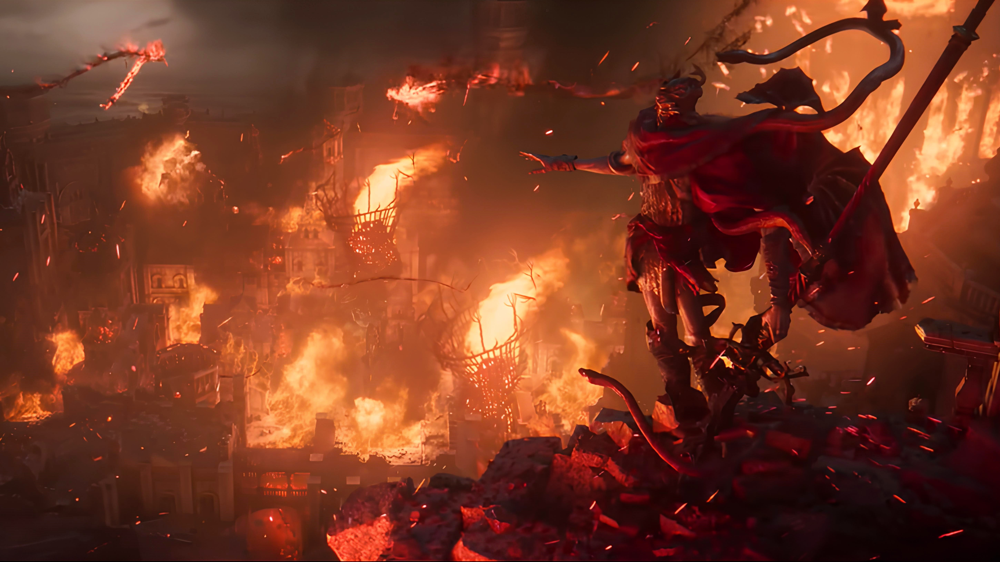

Messmer The Impaler
by Ethan Jones, Nov 8 2024

At the heart of this narrative lies Messmer the Impaler, a demigod and possibly the first child of Marika, who is tasked by his mother with a cleansing crusade in the Land of Shadow. Messmer’s story from the outside looks to be classic evil villain stuff, but if you look closely, there are layers to his motivations that can completely change your perspective.
Messmer the Impaler is a demigod and the supposed firstborn son of Marika, who resides in the Shadow Keep. He was tasked with using his potent fire magic to purge the Hornsent of the land and to burn anything deemed impure to the Golden Order.
"Those stripped of the Grace of Gold shall all meet death, in the embrace of Messmer's flame."
All across the Land of Shadow, you can see Messmer’s influence and how he has become a symbol of fear, with a lot of characters wanting revenge against the demigod for their people’s genocide. Messmer committed these massacres from his throne in the Shadow Keep, though after the Land of Shadow is veiled and Messmer is abandoned by his mother, he loses faith in the crusade. All that resentment he had for being a Lord of nothing because of Marika’s task reaches its peak when you walk into his throne room for the first time. He’s surprised at a tarnished entering the Land of Shadow and knows now that his mother has truly abandoned him.